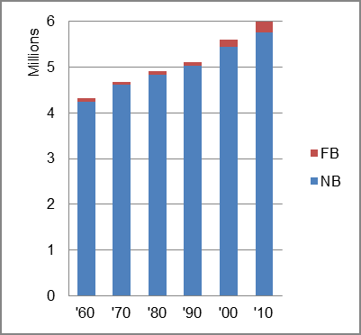

The foreign-born (FB) population increased from 77,756 in 1960 to 232,537 in 2010. That was an increase of 199.1 percent. The foreign-born share changed from 1.8 percent to 3.9 percent.
The share of the overall population that was native-born (NB) increased by 35.7 percent.
Missouri: Population 1960-2010 
The first chart below shows the three population change factors for three periods adjusted for annual average amounts. Natural change (B-D) was the dominant factor in population increase for all periods.
The second chart shows the same data but with an adjustment to reflect births to immigrants shifted to NIM. In it, NIM became the primary factor adding population in the second period.
Missouri: Sources of Population Change 1990-2013 Missouri: Sources of Population Change (Adjusted) 1990-2013
B-D NDM NIM B-D NDM NIM 90-'99 59.5% 29.3% 11.1% 90-'99 50.6% 29.3% 20.0% 00-'09 67.5% 13.0% 19.6% 00-'09 35.0% 13.0% 52.1% 10-'13 73.9% neg. 26.1% 10-'13 59.6% neg. 40.4%